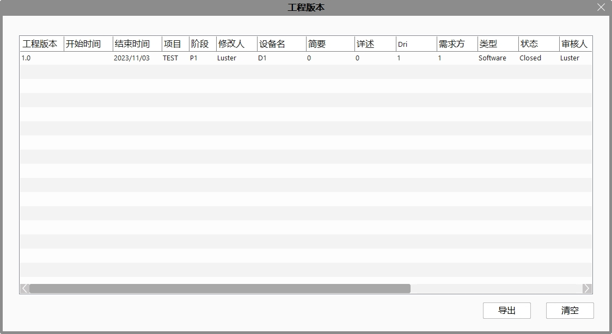

Gồm ba phần: Bảng chính, Thiết lập, Tùy chọn.
Chi tiết các mô-đun khác vui lòng tham khảo mô-đun camera hoặc truyền thông.
Cửa sổ lọc
Cho phép chọn các cửa sổ hiển thị trên giao diện chính, bao gồm thanh trạng thái, bảng thuộc tính, khung xuất, hộp công cụ, giám sát và giao diện.

Thanh trạng thái: hiển thị mức sử dụng CPU, RAM, đĩa, công việc hiện tại, phiên bản phần mềm và thời gian hiện tại;
Bảng thuộc tính: hiển thị thuộc tính của công cụ được chọn;
Khung xuất: hiển thị lỗi, cảnh báo, gợi ý và thông tin tìm kiếm từ công cụ hoặc phần mềm;
Hộp công cụ: hiển thị các công cụ khác nhau. Tham khảo: Hộp công cụ
Giám sát: thêm dữ liệu cần quan tâm vào khu vực giám sát, hiển thị kết quả hoặc biến của công cụ theo thời gian thực;
Giao diện: gồm Edit, Result và các giao diện do người dùng thêm;
Tùy chọn hệ thống
Cho phép chọn ghi lại thông tin, báo lỗi, thiết lập đường dẫn ảnh và dữ liệu, bộ đệm ảnh lịch sử, bật điều khiển từ xa, tự động chuyển sang quyền người vận hành, bật bàn phím ảo trong giao diện sản xuất, v.v. Tham khảo: Tùy chọn hệ thống

Khôi phục bố cục cửa sổ mặc định
Khi không tìm thấy cửa sổ nào đó, chức năng này giúp khôi phục bố cục gốc để hiển thị lại cửa sổ bị mất;
Khi bố cục bị rối loạn và khó chỉnh lại, chức năng này giúp đưa về bố cục ban đầu;
Quyền hạn
Quyền hạn được chia theo mức độ từ cao đến thấp gồm: Quản trị hệ thống, Kỹ sư, Người vận hành.
Quản trị hệ thống: toàn quyền sử dụng
Kỹ sư: không có quyền thao tác các quy trình nghiệp vụ như chỉnh sửa chuỗi dữ liệu, kéo thả công cụ, nhưng có quyền chỉnh mẫu, tham số phần cứng...
Người vận hành: có thể lưu dự án, chuyển đổi công cụ xem trạng thái, chuyển đổi giao diện chạy/chỉnh sửa, không có quyền chỉnh sửa quy trình nghiệp vụ hay mẫu.
Cách sử dụng: mặc định dự án không có mật khẩu, chỉ cần chọn quyền và nhấn xác nhận để thiết lập. Nếu cần mật khẩu, nhấn “Đặt lại mật khẩu”.
Ngôn ngữ
Cho phép chuyển đổi ngôn ngữ phần mềm, gồm: Tiếng Trung (giản thể), English (US), Tiếng Việt.
Phần mềm sẽ lưu lại ngôn ngữ sử dụng lần cuối. Khi mở lại sẽ giữ nguyên ngôn ngữ đó. Ví dụ nếu đóng phần mềm ở giao diện tiếng Anh, mở lại sẽ vẫn là tiếng Anh; khi tải tệp gvp tiếng Trung sẽ chuyển sang giao diện tiếng Trung, tiếng Anh thì chuyển sang giao diện tiếng Anh.
Chỉnh sửa đa ngôn ngữ
Có thể dịch sang các ngôn ngữ khác. Ví dụ: phần mềm đang ở giao diện tiếng Trung, có thể chỉnh sửa ngôn ngữ tiếng Anh. Cột thứ hai là dữ liệu ngôn ngữ hiện tại, không thể chỉnh sửa; cột ba và bốn là dữ liệu các ngôn ngữ khác, có thể chỉnh sửa. Hỗ trợ lọc đơn giản. Giao diện sản xuất sẽ hiển thị dữ liệu đa ngôn ngữ liên quan, sơ đồ quy trình sẽ hiển thị đa ngôn ngữ dùng trong quy trình. Hiện hỗ trợ đa ngôn ngữ cho tên dự án, tên giao diện, tên hình nguyên, tên bố cục và các thành phần giao diện sản xuất như Button, checkBox, Label. Tuy nhiên cần dịch thủ công.
Lưu ý: tên camera của công cụ chụp ảnh, nhãn tham số trong chỉnh sửa giao diện, mô tả biến trong chỉnh sửa tham số và tên nút điều khiển chưa hỗ trợ đa ngôn ngữ.
Với các dự án cũ chưa được dịch, dữ liệu các ngôn ngữ giống nhau. Tuy nhiên sơ đồ quy trình sẽ dùng tên mặc định của công cụ.
Phiên bản dự án
Chức năng quản lý phiên bản dự án ghi lại chi tiết các thay đổi của dự án, phục vụ việc truy vết. Gồm: ghi thông tin phiên bản và xem lịch sử phiên bản. Khi bật quản lý phiên bản, mỗi lần lưu cần nhập phiên bản và mô tả thay đổi. Có thể mở cửa sổ quản lý phiên bản từ thanh menu để xem lịch sử dự án.

Chẩn đoán và sửa lỗi
- Sửa sơ đồ quy trình: xử lý lỗi đứt đoạn, không thể kết nối các hình nguyên trong sơ đồ.

Trợ giúp
Tài liệu trợ giúp: hướng dẫn sử dụng phần mềm.
Ghi chú cập nhật: mô tả cải tiến và sửa lỗi chính trong phiên bản hiện tại.
Thông tin: hiển thị phiên bản phần mềm và thông tin bản quyền.
Danh sách phần cứng: mô tả các dòng và thông số thiết bị 2D, 3D, PLC và bộ điều khiển ánh sáng được phần mềm hỗ trợ.


 để quan sát quy trình sản xuất. Tham khảo: Giao diện sản xuất
để quan sát quy trình sản xuất. Tham khảo: Giao diện sản xuất . Tham khảo: Chỉnh sửa giao diện sản xuất
. Tham khảo: Chỉnh sửa giao diện sản xuất